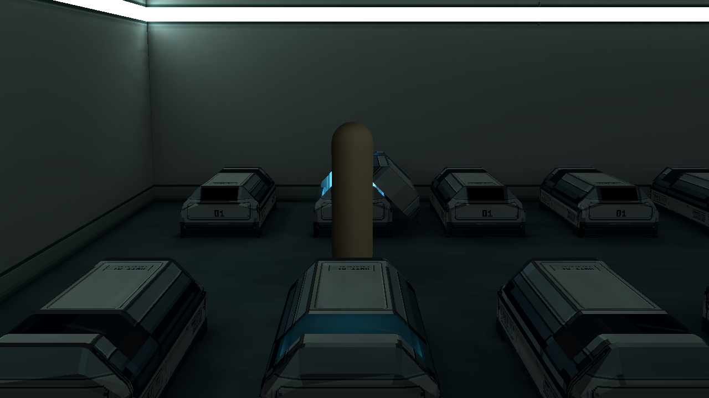

Room 1 / 整室墙地候选 r1
统一蓝灰地坪；墙面主面保持简洁，像素变化集中在真实交界。沿用r4照明与布局，新增独立场景审图。
处理与限制说明 · Godot场景 · r4修复基线
材质候选，尚未替换原场景。镜像采样仍有周期；新固有色的间接反射尚未重烘焙。以下均为原曝光、原1280×720实际画面。

左侧同机位 · 原材质 / 候选
中央同机位 · 原材质 / 候选
右侧同机位 · 原材质 / 候选
更高材质变化强度 · 非默认
用于比较强度，不作为默认效果。
整室巡检 · 13机位
四墙角、门洞、通道与全部20舱；技术相机仅用于检查。